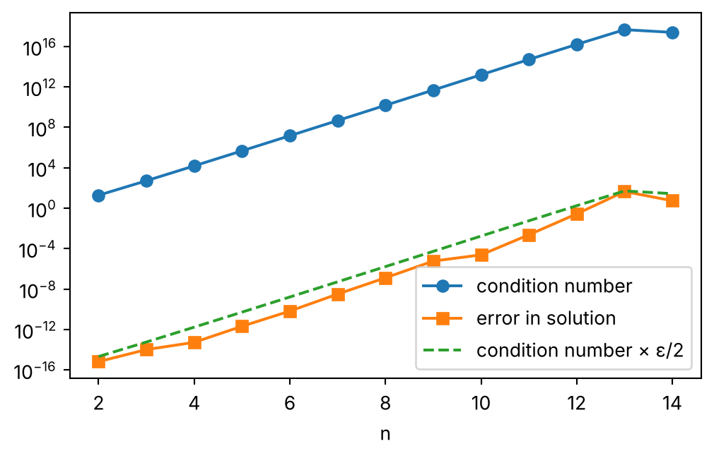

Solutions to the exercises in Part V, grouped by chapter, followed by the solutions to the Part V review. Try each exercise before reading its solution. The link after each solution takes you back to its exercise.
3. Multiply and divide by \(\sqrt{x + 1} + \sqrt{x}\): \[
\sqrt{x + 1} - \sqrt{x} = \frac{(x + 1) - x}{\sqrt{x + 1} + \sqrt{x}} = \frac{1}{\sqrt{x + 1} + \sqrt{x}}.
\] The new form adds two positive numbers instead of subtracting nearly equal ones, so no digits cancel. At \(x = 10^{12}\), the original form gives \(5.00004 \times 10^{-7}\), wrong in the sixth digit, while the new form gives \(4.99999999999875 \times 10^{-7}\), correct to full precision.
5. The singular values are 1 and \(10^{-6}\), so \(\kappa_2 = 10^6\). The equations are \(x = b_1\) and \(10^{-6}y = b_2\): perfectly independent, but on wildly different scales. An error of \(10^{-8}\) in \(b_2\) is a 1% error in \(y\), while the same error in \(b_1\) is negligible. Multiplying the second equation by \(10^6\) (or, equivalently, measuring \(y\) in different units) gives the identity matrix, with \(\kappa = 1\).
6.\(\M{A}\hat{\vect{x}} = (2, 2)\T\), so the residual is \(\vect{b} - \M{A}\hat{\vect{x}} = (0, 0.0001)\T\), of size \(10^{-4}\), while \(\hat{\vect{x}} - \vect{x} = (1, -1)\T\) is as large as \(\vect{x}\) itself. Here \(\kappa_2(\M{A}) \approx 4 \times 10^4\), and the bound of Chapter 24, applied with \(\Delta\vect{b}\) equal to the residual, allows a relative error up to \(4 \times 10^4 \times 10^{-4}/2 \approx 2\), so a 100% error is entirely possible. The two lines are so nearly parallel that \((2, 0)\), which lies on the first line, is within \(10^{-4}\) of the second.
import numpy as npimport matplotlib.pyplot as pltfrom scipy.linalg import hilbertns =range(2, 15)conds, errors = [], []for n in ns: H = hilbert(n) xhat = np.linalg.solve(H, H @ np.ones(n)) conds.append(np.linalg.cond(H)) errors.append(np.max(np.abs(xhat -1)))plt.figure(figsize=(6, 3.5))plt.semilogy(ns, conds, "o-", label="condition number")plt.semilogy(ns, errors, "s-", label="error in solution")plt.semilogy(ns, np.array(conds) *1.1e-16, "--", label="condition number × ε/2")plt.xlabel("n")plt.legend()plt.show()

ns=2:14;conds=zeros(size(ns));errors=zeros(size(ns));fork=1:numel(ns)n=ns(k);H=hilb(n);xhat=H\ (H*ones(n,1));conds(k) =cond(H);errors(k) =max(abs(xhat-1));endsemilogy(ns,conds,'o-',ns,errors,'s-',ns,conds*1.1e-16,'--')xlabel('n'),legend('condition number','error in solution','condition number \times \epsilon/2')
The error follows the line \(\kappa\varepsilon/2\) closely, as the rule of thumb predicts, until \(\kappa\) passes \(10^{16}\) and the solution has no correct digits. The condition number grows by a factor of about 30 each time \(n\) increases by 1, so roughly like \(10^{1.5n}\). (Beyond \(n \approx 13\), the computed condition number itself is no longer accurate, which is why it stops growing.)
1.Without pivoting, the multiplier is \(1/0.0001 = 10\,000\). Then \(a_{22} = 1 - 10\,000 = -9999\), which rounds to \(-10\,000\) in 3 digits, and \(b_2 = 2 - 10\,000 = -9998\), which also rounds to \(-10\,000\). So \(y = 1.00\), and \(0.0001x = 1 - 1 = 0\) gives \(x = 0\).
With partial pivoting, swap the equations. The multiplier is \(0.0001\), \(a_{22} = 1 - 0.0001 = 0.9999 \to 1.00\), and \(b_2 = 1 - 0.0002 = 0.9998 \to 1.00\). So \(y = 1.00\) and \(x = 2 - 1 = 1.00\).
The exact solution is \(x = 1/0.9999 = 1.0001\ldots\), \(y = 0.9998/0.9999 = 0.9999\ldots\), so pivoting gives the best 3-digit answer, while no pivoting gets \(x\) completely wrong. This is Tiny pivot in the app.
3. The entries of \(\M{L}\) below the diagonal are the multipliers \(\ell_{ik} = a_{ik}/a_{kk}\), computed after the swap at step \(k\). Partial pivoting has made \(\lvert a_{kk}\rvert \ge \lvert a_{ik}\rvert\) for every \(i > k\), so \(\lvert\ell_{ik}\rvert \le 1\). The diagonal entries of \(\M{L}\) are 1.
4. In every column the candidates are a 1 on the diagonal and \(-1\)s below it, all of size 1, so (taking the first row in a tie) no swaps are made, and every multiplier is \(-1\): each row has the pivot row added to it. Adding row 1 to rows 2, 3 and 4 doubles their last entries, to 2. Then adding row 2 to rows 3 and 4 doubles theirs again, to 4, and finally row 4’s becomes 8: \[
\M{U} = \mat{1 & 0 & 0 & 1 \\ 0 & 1 & 0 & 2 \\ 0 & 0 & 1 & 4 \\ 0 & 0 & 0 & 8}.
\] The largest entry grows from 1 to 8, a growth factor of \(8 = 2^3\). For size \(n\) it is \(2^{n-1}\).
5. Since \(\lvert a_{11}\rvert > \lvert a_{21}\rvert\), the first pivot is already the largest entry in column 1, so there is no swap. The multiplier is \(m = a_{21}/a_{11}\), with \(\lvert m\rvert < 1\), and the second pivot is \(a_{22} - ma_{12}\). Its size is at least \(\lvert a_{22}\rvert - \lvert m\rvert\,\lvert a_{12}\rvert > \lvert a_{22}\rvert - \lvert a_{12}\rvert > 0\), so it is not zero.
6. Dividing the first equation by \(591\,400\) gives \(0.00005073x + y = 1.000507\), and dividing the second by \(6.130\) gives \(0.8631x - y = 7.631\). Now partial pivoting compares \(0.00005073\) with \(0.8631\), chooses the second equation, and gets the right answer, as scaled partial pivoting did. Scaled partial pivoting compares each candidate pivot with the largest entry in its row, which is exactly what comparing entries of the equilibrated rows does.
import numpy as npimport scipy.linalgdef wilkinson(n): W = np.eye(n) - np.tril(np.ones((n, n)), -1) W[:, -1] =1return Wrng = np.random.default_rng(0)for n in [10, 30, 60]: W = wilkinson(n) x = rng.standard_normal(n) xhat = np.linalg.solve(W, W @ x) P, L, U = scipy.linalg.lu(W)print(f"n = {n}: cond = {np.linalg.cond(W):.1f}, largest entry of U = {np.abs(U).max():.1e}, "f"relative error = {np.linalg.norm(xhat - x, np.inf) / np.linalg.norm(x, np.inf):.1e}")
n = 10: cond = 4.4, largest entry of U = 5.1e+02, relative error = 1.8e-14
n = 30: cond = 13.3, largest entry of U = 5.4e+08, relative error = 5.1e-09
n = 60: cond = 26.8, largest entry of U = 5.8e+17, relative error = 6.1e-01
forn= [103060]W=eye(n) -tril(ones(n),-1);W(:,end) =1;x=randn(n,1);xhat=W\ (W*x); [L,U,P] =lu(W);fprintf('n = %d: cond = %.1f, largest entry of U = %.1e, relative error = %.1e\n',...n,cond(W),max(abs(U(:))),norm(xhat-x,inf) /norm(x,inf));end
The condition number stays small (about 27 for \(n = 60\)), so the problem is well conditioned, yet the error grows from about \(10^{-14}\) to tens of percent as the largest entry of \(\M{U}\) grows like \(2^{n-1}\), to about \(6 \times 10^{17}\). Partial pivoting is not backward stable for this matrix: the growth factor magnifies rounding errors exactly as large multipliers do without pivoting. Such matrices are extremely rare in practice, but they show that the guarantee is not absolute.
1. (a) \(n\) multiplications and \(n - 1\) additions. (b) Each of the \(n\) entries is a dot product, so \(n^2\) multiplications and \(n(n - 1)\) additions, about \(2n^2\) in all. (c) Each of the \(n^2\) entries is a dot product, so \(n^3\) multiplications and \(n^2(n - 1)\) additions, about \(2n^3\).
5. At step \(k\) the pivot row \(k\) has non-zeros only in columns \(k\) and \(k + 1\) (the entry in column \(k - 1\) has already been eliminated), and only row \(k + 1\) has a non-zero below the pivot. So only one multiplier is non-zero, \(\ell_{k+1,k}\), and subtracting a multiple of row \(k\) from row \(k + 1\) changes only its entries in columns \(k\) and \(k + 1\), both already inside the band. So \(\M{L}\) has non-zeros only on its diagonal and just below, \(\M{U}\) only on its diagonal and just above, and no fill-in occurs.
6. With the full row and column last, eliminating each of the first \(n - 1\) columns affects only the last row (the only other row with a non-zero in that column), and changes only its entries in that column and the last, which are already non-zero. So there is no fill-in: \(\M{L}\) has its diagonal and last row, \(\M{U}\) its diagonal and last column, \(3n - 2\) non-zeros between them (counting the shared diagonal once, as in Figure 26.1). With the full row and column first, the very first elimination step subtracts a multiple of the full first row from every other row, filling in the whole matrix: the factors are completely dense, with about \(n^2\) non-zeros.
import numpy as npimport scipy.sparse as spfrom scipy.sparse.linalg import spsolveimport timens = [500, 1000, 2000, 4000]dense_t, sparse_t = [], []for n in ns: A = sp.diags([-1.0, 2.0, -1.0], [-1, 0, 1], shape=(n, n), format="csc") b = np.ones(n) Ad = A.toarray() start = time.perf_counter(); np.linalg.solve(Ad, b); dense_t.append(time.perf_counter() - start) start = time.perf_counter(); spsolve(A, b); sparse_t.append(time.perf_counter() - start)for name, t in [("dense", dense_t), ("sparse", sparse_t)]: slope = np.polyfit(np.log(ns), np.log(t), 1)[0]print(f"{name}: times {[f'{x:.4f}'for x in t]}, grows like n^{slope:.1f}")
dense: times ['0.2929', '0.4428', '0.6120', '1.4344'], grows like n^0.7
sparse: times ['0.0012', '0.0015', '0.0028', '0.0054'], grows like n^0.8
ns= [500100020004000];tdense=zeros(size(ns));tsparse=zeros(size(ns));fork=1:numel(ns)n=ns(k);e=ones(n,1);A=spdiags([-e2*e-e],-1:1,n,n);Ad=full(A);b=ones(n,1);tic;x=Ad\b;tdense(k) =toc;tic;x=A\b;tsparse(k) =toc;endpd=polyfit(log(ns),log(tdense),1);ps=polyfit(log(ns),log(tsparse),1);fprintf('dense grows like n^%.1f, sparse like n^%.1f\n',pd(1),ps(1));
Timings vary from run to run and between computers, especially for small, fast cases, but the dense times grow roughly like \(n^3\) (often a little less for these sizes, because fast libraries run faster on larger matrices). The sparse times are so small, around a millisecond, that fixed overheads dominate; trying \(n\) up to \(10^6\) shows them growing like \(n\). MATLAB’s backslash notices that a full matrix is tridiagonal and uses a banded solver even on Ad, so its dense times may grow much more slowly; NumPy’s solve always does dense elimination.
6. A factor of 1000 needs \(k\) steps with \(\rho^k = 10^{-3}\), so \(k = 3/(-\log_{10}\rho)\): about 66 steps for \(\rho = 0.9\), but about 687 for \(\rho = 0.99\). When \(\rho\) is close to 1, \(-\log_{10}\rho \approx (1 - \rho)/2.3\), so the number of steps is inversely proportional to \(1 - \rho\): ten times closer to 1 means ten times as many steps.
import numpy as npfrom scipy.linalg import solve_triangularfrom scipy.sparse.linalg import cgdef count_steps(n): A =2* np.eye(n) - np.eye(n, k=1) - np.eye(n, k=-1) b = np.ones(n) / (n +1)**2 D, L, U = np.diag(np.diag(A)), np.tril(A, -1), np.triu(A, 1) rho = np.cos(np.pi / (n +1)) w =2/ (1+ np.sqrt(1- rho**2)) out = {}for name, (M, N) in {"Jacobi": (D, L + U), "Gauss-Seidel": (D + L, U),"SOR": (D / w + L, U + (1-1/ w) * D)}.items():if name !="SOR"and n >100: out[name] =None# too slow to run herecontinue x, k = np.zeros(n), 0while np.linalg.norm(b - A @ x) >=1e-6* np.linalg.norm(b):# M is diagonal or lower triangular, so use a triangular solve:# it is much cheaper than a general solve, run tens of thousands of times x = solve_triangular(M, b - N @ x, lower=True) k +=1 out[name] = k steps = [] cg(A, b, rtol=1e-6, callback=lambda xk: steps.append(1)) out["CG"] =len(steps)return outfor n in [25, 50, 100, 200]:print(n, count_steps(n))
Each doubling of \(n\) roughly multiplies the Jacobi and Gauss–Seidel counts by 4, so they grow like \(n^2\), because \(1 - \rho(\M{T}_J) = 1 - \cos\bigl(\pi/(n+1)\bigr) \approx \pi^2/\bigl(2(n + 1)^2\bigr)\). (For \(n = 200\), Jacobi would need about \(110\,000\) steps and Gauss–Seidel half as many, so the code skips them.) Best SOR and CG grow like \(n\): SOR needs about \(3n\) steps here, and CG exactly \(n/2\). That is because \(\vect{b}\) is symmetric about the middle of the rod, so it is a combination of only half of the eigenvectors of \(\M{A}\), and in exact arithmetic CG needs at most one step for each eigenvector involved. The MATLAB version follows the chapter’s code in the same way, with pcg for CG. Plotting the residual against the step number on a log scale shows straight lines for the stationary methods, whose slopes are \(\log_{10}\rho\), and a curve that drops away steeply for CG.
2.\(\M{J} = \mat{2x & -1 \\ -1 & 2y}\). At \((2, 2)\), \(\vect{f} = (2, 2)\T\) and \(\M{J} = \mat{4 & -1 \\ -1 & 4}\), so \(\Delta\vect{x}\) solves \(4\Delta x - \Delta y = -2\), \(-\Delta x + 4\Delta y = -2\), giving \(\Delta x = \Delta y = -\tfrac{2}{3}\) and \(\vect{x}_1 = \bigl(\tfrac{4}{3}, \tfrac{4}{3}\bigr)\). It is heading for the root \((1, 1)\) (the other real root is \((0, 0)\)).
3.\(f'(x) = 2x\), so \(x_{k+1} = x_k - \dfrac{x_k^2 - a}{2x_k} = \dfrac{x_k^2 + a}{2x_k} = \tfrac{1}{2}\Bigl(x_k + \dfrac{a}{x_k}\Bigr)\): the average of \(x_k\) and \(a/x_k\), one too large and one too small.
4.\(f'(x) = 3x^2 - 2\). From \(x_0 = 0\): \(x_1 = 0 - 2/(-2) = 1\). From \(x_1 = 1\): \(f(1) = 1\), \(f'(1) = 1\), so \(x_2 = 1 - 1 = 0\). So the iterates are \(0, 1, 0, 1, \dots\) for ever. (The equation’s only real root is near \(-1.77\).)
5.\(x_{k+1} = x_k - x_k^2/(2x_k) = x_k/2\). The error halves at each step: linear convergence, with factor \(\tfrac{1}{2}\). At a double root \(f'\) is zero too, so the tangent line is a poor guide.
6. The \(i\)th entry of \(\nabla g\) is \(\partial g/\partial x_i\), so the \((i, j)\) entry of its Jacobian is \(\partial^2 g/\partial x_j\partial x_i\), the Hessian. The Newton step solves \(\M{H}(\vect{x}_k)\,\Delta\vect{x} = -\nabla g(\vect{x}_k)\). For the quadratic, \(\nabla g = \M{A}\vect{x} - \vect{b}\) and \(\M{H} = \M{A}\), so \(\vect{x}_1 = \vect{x}_0 - \M{A}^{-1}(\M{A}\vect{x}_0 - \vect{b}) = \M{A}^{-1}\vect{b}\): the minimiser, in one step, from any start.
There are six intersections, at about \((\pm 0.626, \pm 0.950)\), \((\pm 1.067, \pm 0.846)\) and \((\mp 1.798, \pm 0.438)\) (taking the signs together, since the curves are symmetric under \((x, y) \to (-x, -y)\)). From these starts, the finite-difference version needs 5 or 6 steps, exactly the same as with the exact Jacobian: the small errors in the approximate Jacobian hardly slow convergence. Starting at \((0, 0)\) fails, because the Jacobian \(\mat{2x & 8y \\ -2\cos 2x & 1}\) is singular there.
1.\(\M{A}\vect{q}_0 = (4, 2)\T\), \(\vect{q}_1 = \tfrac{1}{\sqrt{5}}(2, 1)\T\), and the Rayleigh quotient is \(\tfrac{1}{5}(2, 1) \cdot (9, 7) = 5\). The next two estimates are \(5.077\) and \(5.042\), approaching 5. The error factor per step is \(\lvert 2/5\rvert = 0.4\). This matrix is not symmetric, so the estimates don’t converge at the squared rate, and the first estimate being exactly 5 is a coincidence.
2. (a) The power method finds 6, with factor \(\lvert -5\rvert/6 \approx 0.83\): slow. (b) Inverse iteration finds the eigenvalue smallest in size, 1, with factor \(\lvert 1\rvert/\lvert -5\rvert = 0.2\). (c) With shift 5.5, the distances to the eigenvalues are 0.5, 10.5 and 4.5, so it finds 6, with factor \(0.5/4.5 \approx 0.11\).
4. The matrix swaps the two entries, so the iterates are \((1, 0)\), \((0, 1)\), \((1, 0)\), … for ever. Its eigenvalues are \(1\) and \(-1\), equal in size, so neither dominates: in terms of the eigenvectors \((1, 1)\) and \((1, -1)\), the start is \(\tfrac{1}{2}(1, 1) + \tfrac{1}{2}(1, -1)\), and the second part just changes sign each step. Shifting fixes it: \(\M{A} + \M{I}\) has eigenvalues 2 and 0, and the power method on it converges in one step to \((1, 1)/\sqrt{2}\), giving \(\lambda = 2 - 1 = 1\).
6. Solve \(\M{K}\vect{y} = \vect{q}_0\) with \(\vect{q}_0 = \tfrac{1}{\sqrt{3}}(1, 1, 1)\T\): \(\vect{y} = \tfrac{1}{\sqrt{3}}(1.5, 2, 1.5)\T\). Normalising, \(\vect{q}_1 \approx (0.5145, 0.6860, 0.5145)\T\), with Rayleigh quotient \(\tfrac{10}{17} \approx 0.58824\). A second step gives \(\vect{q}_2 \approx (0.5025, 0.7035, 0.5025)\T\) and \(0.585859\). The exact value is \(2 - \sqrt{2} \approx 0.585786\): the error drops from \(0.0025\) to \(0.00007\). The eigenvector \((1, \sqrt{2}, 1)/2 \approx (0.5, 0.7071, 0.5)\), the lowest mode shape, is emerging.
The five computed eigenvalues agree with the formula to about 12 significant digits. For the power method, the two largest eigenvalues are about \(3.99999015\) and \(3.99996060\), with ratio \(0.9999926\), so each digit would need about \(311\,000\) steps: hopeless. The shift-and-invert Lanczos method behind eigsh and eigs needs only a few dozen steps.
5. With \(\M{A} = \M{U}\M{\Sigma}\M{V}\T\), \(\M{A}\T\M{A} = \M{V}\M{\Sigma}\T\M{\Sigma}\M{V}\T\), which is an SVD of \(\M{A}\T\M{A}\) with singular values \(\sigma_i^2\). So \(\kappa_2(\M{A}\T\M{A}) = \sigma_1^2/\sigma_n^2 = \kappa_2(\M{A})^2\).
6. Extend \(\M{Q}\) to a square orthogonal matrix \([\M{Q} \; \M{Q}_2]\). Multiplying by an orthogonal matrix preserves length, so \[
\lVert\vect{b} - \M{A}\vect{x}\rVert^2 = \lVert\M{Q}\T\vect{b} - \M{R}\vect{x}\rVert^2 + \lVert\M{Q}_2\T\vect{b}\rVert^2.
\] The first term is zero at \(\hat{\vect{x}}\), so the residual is \(\lVert\M{Q}_2\T\vect{b}\rVert^2 = \lVert\vect{b}\rVert^2 - \lVert\M{Q}\T\vect{b}\rVert^2\), again because the full orthogonal matrix preserves the length of \(\vect{b}\).
Householder’s \(\M{Q}\) stays orthogonal to about \(10^{-15}\) whatever the conditioning. Modified Gram–Schmidt loses orthogonality in proportion to \(\kappa(\M{A})\varepsilon\), and classical Gram–Schmidt in proportion to \(\kappa(\M{A})^2\varepsilon\), so on log scales they are straight lines of slopes 1 and 2, until classical reaches order 1 and its “\(\M{Q}\)” is useless.
1.Uses Chapter 24 and Chapter 7. Subtracting the first equation from the second gives \(0.001y = 0.001\) in the first case and \(0.001y = 0.002\) in the second. So \(\vect{x} = (1, 1)\), and then \(\vect{x} = (0, 2)\). \(\det\M{A} = 0.001\), so \[\M{A}^{-1} = 1000\mat{1.001 & -1 \\ -1 & 1},\] and \(\lVert\M{A}\rVert_\infty = 2.001\), \(\lVert\M{A}^{-1}\rVert_\infty = 2001\), giving \(\kappa_\infty(\M{A}) = 2.001 \times 2001 \approx 4004\). The relative change in \(\vect{b}\) was \(0.001/2.001 \approx 5 \times 10^{-4}\), and \(\kappa\) allows this to be magnified up to about 4000 times, to a relative change of about 2 in \(\vect{x}\). The actual change, 1, is within this bound. Geometrically, the two lines are almost parallel, so a tiny shift of one moves their crossing point a long way.
2.Uses Chapter 25 and Chapter 11. The true solution is \(x = 1/0.9999 \approx 1.0001\), \(y \approx 0.9999\).
Without row swaps, the multiplier is \(1/0.0001 = 10\,000\). The new second row has \(1 - 10\,000 = -9999\), which rounds to \(-1.00 \times 10^4\), and right-hand side \(2 - 10\,000 = -9998\), which also rounds to \(-1.00 \times 10^4\). So \(y = 1.00\), and then \(x = (1 - 1.00)/0.0001 = 0\): completely wrong.
With partial pivoting, swap the rows so that the pivot is 1. The multiplier is \(0.0001\), the new second row has \(1 - 0.0001 = 0.9999 \to 1.00\), and right-hand side \(1 - 0.0002 = 0.9998 \to 1.00\). So \(y = 1.00\) and \(x = 2 - 1.00 = 1.00\): correct to 3 figures.
The tiny pivot made a huge multiplier, so the original entries of the second row were swamped and lost in rounding. Then back substitution divided by the tiny pivot, which magnified the remaining error in \(y\).
The dense matrix has \(10^{12}\) entries, which need \(8 \times 10^{12}\) bytes, or 8 terabytes. LU costs about \(\tfrac{2}{3}n^3 \approx 7 \times 10^{17}\) operations: at \(10^{11}\) operations per second, about \(7 \times 10^6\) seconds, or roughly 80 days.
The Thomas algorithm costs about \(8n = 8 \times 10^6\) operations, a few milliseconds, and the three diagonals plus the right-hand side need about \(4 \times 10^6 \times 8\) bytes, or 32 megabytes.
4.Uses Chapter 27 and Chapter 18. Split \(\M{A} = \M{D} + \M{L} + \M{U}\) into its diagonal, below-diagonal and above-diagonal parts. Then \[
\M{T}_J = -\M{D}^{-1}(\M{L} + \M{U}) = \mat{0 & -\tfrac{1}{4} \\ -\tfrac{2}{5} & 0}, \qquad
\M{T}_{GS} = -(\M{D} + \M{L})^{-1}\M{U} = \mat{0 & -\tfrac{1}{4} \\ 0 & \tfrac{1}{10}}.
\] The eigenvalues of \(\M{T}_J\) satisfy \(\lambda^2 = \tfrac{1}{10}\), so \(\rho_J = \sqrt{0.1} \approx 0.316\); \(\M{T}_{GS}\) is triangular, with eigenvalues 0 and 0.1, so \(\rho_{GS} = 0.1 = \rho_J^2\). The error shrinks by about \(\rho\) per step, so reducing it by \(10^6\) takes about \(6/\log_{10}(1/\rho)\) steps: 12 for Jacobi and 6 for Gauss–Seidel.
5.Uses Chapter 28. With \(\vect{F}(x, y) = (x^2 + y^2 - 4,\ xy - 1)\), \[
\M{J} = \mat{2x & 2y \\ y & x} = \mat{4 & 1 \\ 0.5 & 2}, \qquad \vect{F}(2, 0.5) = \mat{0.25 \\ 0}
\] at the starting point. Solving \(\M{J}\vect{\delta} = -\vect{F}\) means \(4\delta_1 + \delta_2 = -0.25\) and \(0.5\delta_1 + 2\delta_2 = 0\). The second gives \(\delta_1 = -4\delta_2\), and then the first gives \(-15\delta_2 = -0.25\), so \(\vect{\delta} = (-\tfrac{1}{15}, \tfrac{1}{60})\), so the new point is \((1.9333, 0.5167)\). The true solution is \(x = (\sqrt{6} + \sqrt{2})/2 \approx 1.9319\), \(y = (\sqrt{6} - \sqrt{2})/2 \approx 0.5176\) (from \((x + y)^2 = 6\) and \((x - y)^2 = 2\)), so one step reduced the error from about 0.07 to about 0.0015.
The estimates approach the largest eigenvalue, 3, and \(\vect{v}\) approaches its eigenvector \((1, 1)\). The other eigenvalue is 1, so the unwanted part of \(\vect{v}\) shrinks by a factor of \(\lambda_2/\lambda_1 = \tfrac{1}{3}\) each step: the errors \(1, 0.5, 0.2\) have ratios \(0.5\) and \(0.4\), approaching \(\tfrac{1}{3}\).
7.Uses Chapter 30 and Chapter 17. The columns of \(\M{X}\) are \(\vect{a}_1 = (1, 1, 1, 1)\) and \(\vect{a}_2 = (0, 1, 2, 3)\). Gram–Schmidt gives \(r_{11} = \lVert\vect{a}_1\rVert = 2\), \(\vect{q}_1 = \tfrac{1}{2}(1, 1, 1, 1)\), then \(r_{12} = \vect{q}_1 \cdot \vect{a}_2 = 3\) and \[\vect{a}_2 - 3\vect{q}_1 = (-1.5, -0.5, 0.5, 1.5),\] with length \(r_{22} = \sqrt{5}\). Then \(\M{Q}\T\vect{y} = (6, \sqrt{5})\), and back substitution in \[\mat{2 & 3 \\ 0 & \sqrt{5}}\mat{c_0 \\ c_1} = \mat{6 \\ \sqrt{5}}\] gives \(c_1 = 1\), \(c_0 = 1.5\): the same line \(y = 1.5 + x\) as from the normal equations (the Part III review, exercise 4).
8.Uses Chapter 30 and Chapter 24. Double precision carries about 16 significant digits, and a problem with condition number \(10^k\) can lose about \(k\) of them. (a) The normal equations use \(\M{X}\T\M{X}\), whose condition number is \(\kappa^2 = 10^{10}\), so expect only about 6 correct digits. (b) QR works with \(\M{X}\) itself, losing about 5, so expect about 11.
import numpy as npA = np.array([[4.0, 1], [2, 5]])b = np.array([6.0, 12])x_true = np.linalg.solve(A, b)D = np.diag(np.diag(A))L = np.tril(A, -1)for name, M in (("Jacobi", D), ("Gauss-Seidel", D + L)): N = M - A # A = M - N, iterate M x_new = N x + b rho =max(abs(np.linalg.eigvals(np.linalg.solve(M, N))))print(f"{name}, spectral radius {rho:.4f}") x = np.zeros(2) err = np.linalg.norm(x - x_true)for k inrange(1, 7): x = np.linalg.solve(M, N @ x + b) new_err = np.linalg.norm(x - x_true)print(f" step {k}: error {new_err:.2e}, ratio {new_err / err:.4f}") err = new_err
Jacobi, spectral radius 0.3162
step 1: error 6.40e-01, ratio 0.2864
step 2: error 2.24e-01, ratio 0.3492
step 3: error 6.40e-02, ratio 0.2864
step 4: error 2.24e-02, ratio 0.3492
step 5: error 6.40e-03, ratio 0.2864
step 6: error 2.24e-03, ratio 0.3492
Gauss-Seidel, spectral radius 0.1000
step 1: error 5.39e-01, ratio 0.2408
step 2: error 5.39e-02, ratio 0.1000
step 3: error 5.39e-03, ratio 0.1000
step 4: error 5.39e-04, ratio 0.1000
step 5: error 5.39e-05, ratio 0.1000
step 6: error 5.39e-06, ratio 0.1000
A= [41;25];b= [6;12];x_true=A\b;D=diag(diag(A));L=tril(A,-1);names= {'Jacobi','Gauss-Seidel'};splits= {D,D+L};% the matrix M in A = M - Nform=1:2M=splits{m};N=M-A;% iterate M*x_new = N*x + bx= [0;0];err=norm(x-x_true);fprintf('%s, spectral radius %.4f\n',names{m},max(abs(eig(M\N))))fork=1:6x=M\ (N*x+b);new_err=norm(x-x_true);fprintf(' step %d: error %.2e, ratio %.4f\n',k,new_err,new_err/err)err=new_err;endend
Jacobi, spectral radius 0.3162
step 1: error 6.40e-01, ratio 0.2864
step 2: error 2.24e-01, ratio 0.3492
step 3: error 6.40e-02, ratio 0.2864
step 4: error 2.24e-02, ratio 0.3492
step 5: error 6.40e-03, ratio 0.2864
step 6: error 2.24e-03, ratio 0.3492
Gauss-Seidel, spectral radius 0.1000
step 1: error 5.39e-01, ratio 0.2408
step 2: error 5.39e-02, ratio 0.1000
step 3: error 5.39e-03, ratio 0.1000
step 4: error 5.39e-04, ratio 0.1000
step 5: error 5.39e-05, ratio 0.1000
step 6: error 5.39e-06, ratio 0.1000
The solution is \(\vect{x} = (1, 2)\). For Gauss–Seidel the ratio settles at exactly \(\rho = 0.1\). For Jacobi it alternates between about 0.29 and 0.35, because its two eigenvalues, \(\pm 0.316\), have the same size; over two steps the error shrinks by exactly \(0.316^2 = 0.1\), so on average by \(\rho\) per step.